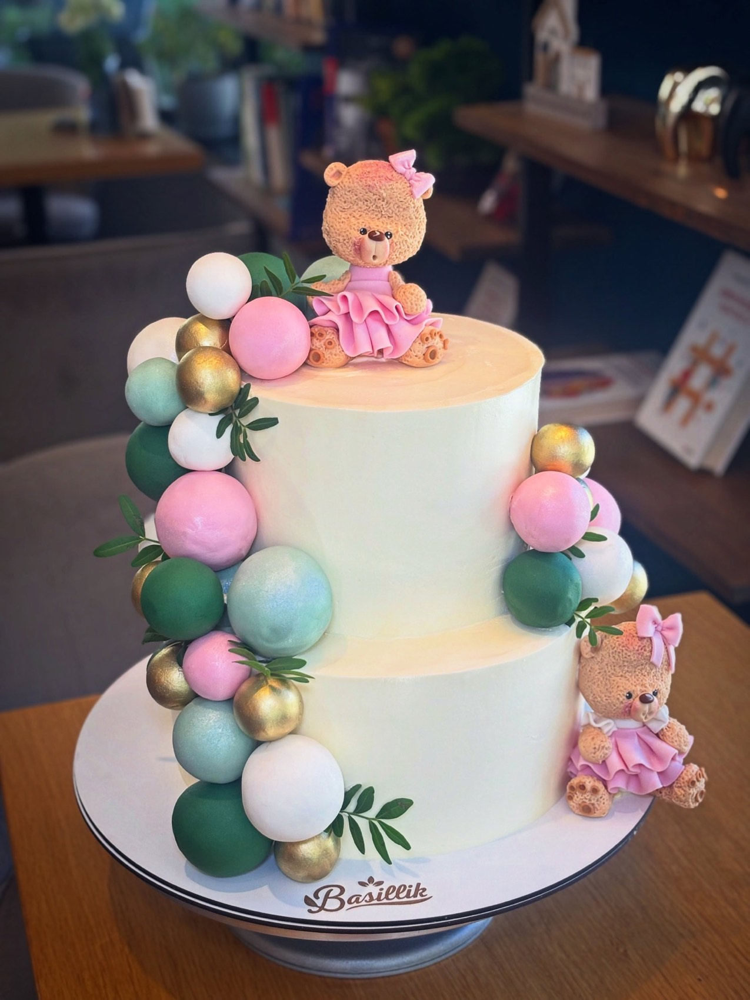
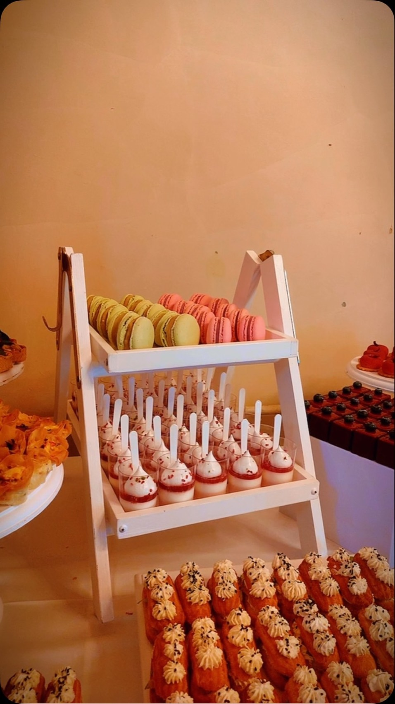

Medovik
26 lei120 g
Blaturi cu miere, caramel, cremă cu smântână.
Obiectul I · din vitrină
Blaturi coapte cu miere, cremă cu smântână, fructe proaspete. Răsfăț fin, cu zahăr mai puțin. Tort la comandă și candy bar pentru evenimente.

Placa de expoziție
O afacere de familie pornită în Republica Moldova, mutată la Brașov cu rețetele nemodificate.
De aici vine ce găsiți în vitrină: Medovik, Smetanik, Napoleon. Blaturi coapte cu miere, cremă cu smântână, nuci caramelizate. Nu sunt deserturi de patiserie franțuzească trecute prin filtru local, sunt rețete est-europene făcute exact cum se făceau acasă, lângă produse de patiserie de inspirație italiană.
Ingrediente naturale, zahăr puțin, gust echilibrat. Ce se termină astăzi se coace mâine dimineață.
Colecția permanentă
Fiecare monoporție e desenată aici în secțiune, cu straturile ei reale. Prețurile sunt cele de pe Wolt, septembrie 2026.
Blaturi cu miere, caramel, cremă cu smântână.
Blaturi cu miere, cremă de smântână, nuci caramelizate.
Foietaj sfărâmicios, cremă fiartă cu ciocolată albă, vișine.
Blat cu cacao, mousse din ciocolată neagră, vișină, ganaș.
Dacquoise de migdale, cremă de cafea, caramel cu vanilie, mousse de ciocolată caramelizată, un strop de amaretto.
Fără zahăr. Blat și mousse de ciocolată neagră, cremă de mango, jeleu de căpșună.
Blat crocant, caramel, ciocolată, alune.
Vitrina se schimbă. Lângă monoporții stau limonade făcute în casă (22 - 25 lei), fresh de portocale sau grapefruit și cafea de specialitate: americano 16 lei, flat white 29 lei.
Medovik. De aici a pornit totul, și tot el spune cel mai bine cum lucrăm.
Secțiune prin obiect
Blaturile se coc separat și se lasă trei zile în cremă, ca să se înmoaie singure. Nu există variantă rapidă. De asta se termină.
La comandă
Spuneți tema, culorile, numărul de porții și data. Restul se desenează împreună. Comenzile se fac cu minimum câteva zile înainte, pe WhatsApp sau în locație.




Candy bar
Spuneți tema, culorile, florile sau stilul, iar masa se compune în jurul lor. Se livrează aranjată, nu în cutii.
Cum se comandă
B-dul Muncii nr. 4
Brașov, 500281
Luni - Duminică
9:00 - 21:00
0727 004 128
comenzi și pe WhatsApp